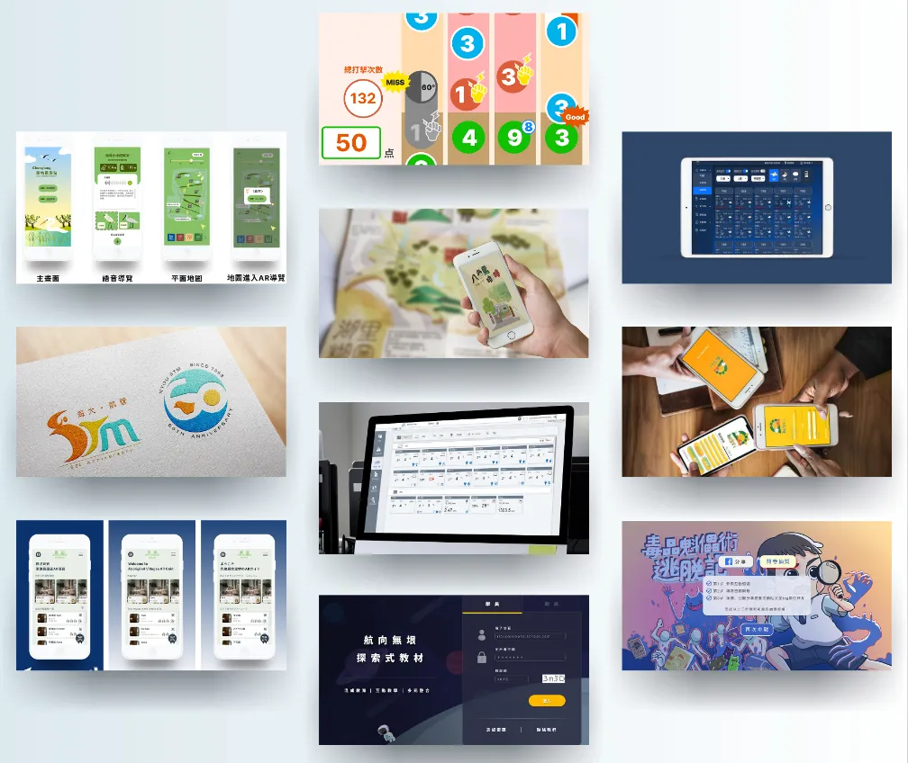
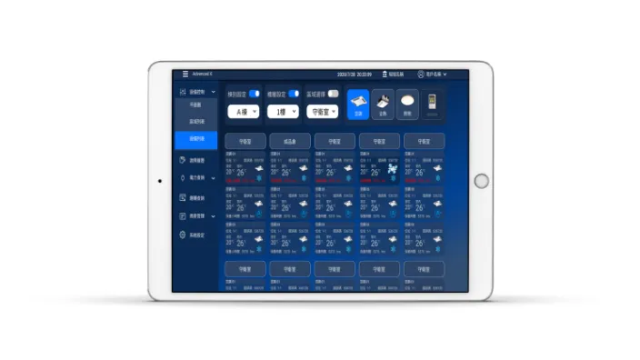
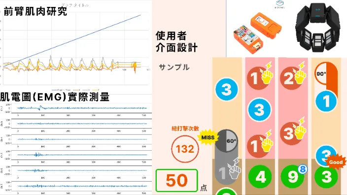
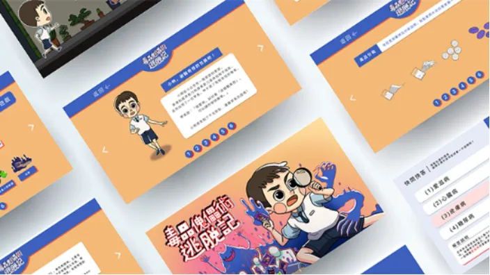
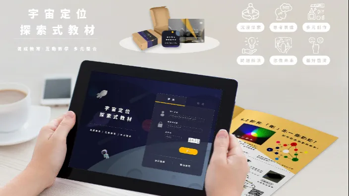

UX / UI Portfolio Resume

把研究洞察轉成能落地的介面與系統。
服務設計、跨域研究、RWD 介面規劃與前端協作，是目前最穩定的設計工作帶。
UX/UI Designer
施佳音
UX/UI 設計師｜服務設計研究者｜跨域整合協作者
以數位服務設計、使用者體驗設計與跨媒體整合為核心，累積研究助理、國際研究計畫與政府專案系統設計經驗。曾於國家地震工程研究中心負責響應式監測網站與數位孿生平台設計，也曾在大阪工業大學進行高齡者肌肉狀態與互動系統研究，擅長把研究、規格與介面設計串成可執行的產品流程。
Core Practice
設計重點
參考履歷型模板的乾淨結構，但把內容排序改成更符合 UX/UI 求職的敘事：先看定位，再看能力、經歷、專案與證明。
服務設計與 UX 研究
熟悉利害關係人訪談、易用性測試、研究方法規劃、文獻整理與研究提案撰寫。
UI 系統與原型設計
能從資訊整理、Wireframe、原型到設計規範，持續推進到產品團隊可實作的層級。
跨域溝通與交付
具工程、研究、產品與展會協作經驗，能把抽象需求轉成節點清楚的設計輸出。
視覺整合與前端協作
熟悉 Figma、HTML、CSS、Git 與設計文件整理，能支援 RWD 與前端溝通。
Career Journey
工作與研究經歷
以目前最能代表設計實力的三段經歷為主，聚焦政府系統、研究計畫與國際實驗現場。
2024.11 — 2026.02
財團法人國家實驗研究院國家地震工程研究中心
- 參與跨局處數位孿生專案與監測系統開發，負責介面原型、設計規範與 UI/UX 規劃報告。
- 執行利害關係人訪談、使用者易用性測試與 Design spec 撰寫。
- 協助 CES、VIVA Tech、APICTA 等國際展會與競賽準備。
- 推進設計系統與原型交付，支援工程溝通與落地實作。
2022.09 — 2022.12
大阪工業大學
- 於人體感測研究室蹲點，研究高齡者需求與握力、腦訓練相關設計題目。
- 結合 EMG、M5 Stick C Plus 與 C / C# 開發跨領域互動系統。
- 建立系統化設計評估流程，完成研究提案與實體介面輸出。
2021.09 — 2023.12
國立雲林科技大學 IMDR Lab
- 協助國科會永續環境服務設計研究方法計畫，負責國內外文獻查找、資料分析與研究書寫。
- 支援視覺設計與 App 開發相關產出，串接研究內容與設計執行。
- 累積系統思考、研究架構制定與跨媒體整合能力。
Selected Work
精選專案
從原始履歷中的專案成就挑出最能代表 UX/UI、研究與數位服務設計能力的四個項目。

2020 / UXUI Design
設備監控系統多螢幕 UX/UI Design
負責利害關係人訪談、介面整合設計與 Web RWD 實裝，將複雜設備監控情境轉成清楚的多螢幕資訊架構。

2022 / Research & System Design
改善老年人肌肉狀態的鼓遊戲系統設計研究與開發
以高齡者握力訓練與腦訓練為目標，結合肌肉量測、互動遊戲與 Air Drum 概念，完成研究提案與系統開發。
查看簡報

2022 / Service Design
ASUS Think Next x TDRI 宇宙定位探索式教材
以質性訪談與五感體驗為基礎，設計數位整合教育教材平台，回應兒童探索式學習與家長需求洞察。
Education & Proof
學歷與能力證明
保留最有說服力的學術背景、證照與語言能力，讓履歷更像設計師的專業品牌頁，而不是 104 欄位列表。
學歷
國立雲林科技大學｜數位媒體設計學系 碩士
2021.09 — 2024.06
國立雲林科技大學｜數位媒體設計系 學士
2017.09 — 2021.06
私立復興工商專校｜廣告設計科
2014.09 — 2017.06
證照
Google UX Design Certification
Coursera 完成證書，作為 UX 設計方法與流程的國際化補強。
TOEIC 750
支援英文簡報、國際展會與英文設計溝通情境。
JLPT N2 / N3
支援日本研究計畫參與、日文資料閱讀與跨國合作。
語言與工具
- 英文：聽 / 說 / 讀 / 寫皆為中等，具實際簡報與展會協作經驗。
- 日文：聽與讀精通，說與寫中等，可支援日本研究合作與資料理解。
- 工具：Figma、HTML、CSS、Git、Adobe Photoshop、Illustrator、Unity3D、Blender。
- 研究與交付：利害關係人訪談、Usability Testing、Wireframe、Design System、Design Spec。